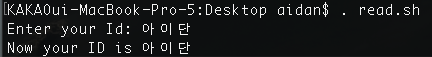

유닉스 리눅스 쉘스크립트 공부
서버 프로그래머로 프로젝트를 진행하다보니 배포과정에서 쉘스크립트에 대한 공부를 좀 해야겠다는
생각이 들었습니다. 특히 bash에 대한 이해가 뒷받침 된다면 원격지에 있는 서버에 대한 컨트롤이 용이해
진다는 것은 팩트. 레츠고;;
https://opentutorials.org/course/2598/14204
생활코딩 쉘스크립트 기본 강좌를 듣고 오시는 것도 큰도움
|
|
터미널에 위 명령어를 실행시키면 해당 터미널이 무슨 쉘인지 알수 있습니다.
Bash도 일종의 프로그램입니다.
우리는 이 bash를 통해 컴퓨터, 좀 더 자세히는 커널에 명령을 내릴 수 있습니다.
다른 종류의 쉘프로그램인 zsh도 있습니다.
read 명령어
read 명령어는 사용자가 키보드를 사용해 입력하면
해당 값을 읽어와서 변수에 저장합니다.
|
|
echo -n옵션을 사용한다면 줄바꿈 없이 메세지를 출력할 수 있습니다

여러입력을 받고 싶다면 스페이스로 구분지어 입력받을 수 있습니다.
|
|
echo_back 명령어
맥의 터미널을 처음 접했을때
비밀번호가 타이핑되지않고 아무것도 보여주지않아서 혼란스러웠던적이 있었습니다
’왜 안쳐지지…?'
하지만 뒤에서 쳐지고있는거였죠. 안보일뿐!
에코백은 사용자가 암호를 입력하는 처리에서 화면에 표시하지 않고자할때 쓰입니다.
누군가 화면을 훔쳐볼 가능성이 있기 때문에
보안상 에코백을 끄는(off)게 보통입니다
생각보다 엄청간단해요!
|
|
입력한 암호를 통해 ftp서버에서 파일을 내려받습니다.
wget의 -q옵션(quiet모드)을 통해 동작상태가 출력되지 않도록 파일 내려받기만 하도록 지정합니다.
사용자 키입력을 한글자만 받아내기
터미널을 통해 파일들을 다운받는 행위를 할때면 사용자의 동의를 구하곤합니다.
|
|
이런화면을 자주만나죠
한번 구현해보겠습니다
|
|
에코백 예제와 비슷하게
상태를 되돌리는 것이 중요합니다.
현재 터미널의 상태를 쉘변수에 백업해둡니다. (tty_state)
stty 명령어는 터미널(단말) 상태를 설정하는 명령어입니다.
stty raw를 통해 터미널을 raw모드로 변경하면
키 버퍼 처리를 하지 않아 문자마다 처리가 가능합니다.
현재 터미널 설정 표시
raw모드로 할경우 현재 터미널 설정이 지워지므로 저장을 꼭해야합니다!
이어서 실제 키입력값은 다음 dd명령어에 직접 전달됩니다.
dd 명령어에서는 입출력의 블록크기를 1 (bs=1)
입력에서 출력으로 복사하는 블록 수를 1(count=1)로 해서
입력된 문자를 셸 변수 char에 설정합니다
또한 dd 명령어 실행메세지는 필요없으므로 /dev/null로 리다이렉트해서 버립니다.
이후 case문을 이용해 입력된 값에 따른 분기처리합니다~